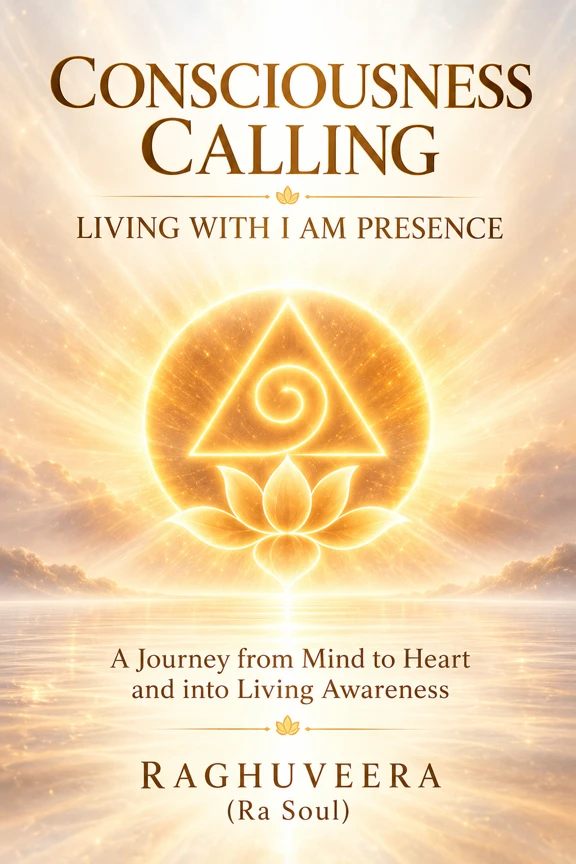

CONSCIOUSNESS CALLING
Living with I AM Presence
From Mind to Heart — A Journey of Divine Remembrance
We are not evolving to become Divine. We are awakening to recognize the Divine Presence already within us — and learning to live from that recognition.
Recognize the Light. Remember the Presence. Live the Love.
What Is Consciousness Calling?
Consciousness Calling is not a journey in which a human being strives to reach a distant God. It offers a spiritual vision in which the Supreme Consciousness already present in every Heart is calling from within and expressing itself through human life.
Not the Soul searching for Consciousness… but Consciousness calling itself through the Soul.

Book One
CONSCIOUSNESS CALLING — Living with I AM Presence
A foundational journey through time, thought, perception, emotion, the mind, silence, Heart and recognition of I AM Presence. The journey does not end with recognition; it begins again in the way we live.
- ISBN
- Publication date
- Price
- Available at
Explore Consciousness Calling
Five Living Movements
One Consciousness. An Ever-Unfolding Journey.
- Consciousness CallingHear
- Consciousness RevealingSee
- Consciousness LivingLive
- Consciousness EmbodiedExpress
- The Great RememberingRemember & Serve
LIGHT CODE: RECOGNIZE ↔ REVEAL ↔ LIVE ↔ EMBODY ↔ REMEMBER & SERVE
ONE CONSCIOUSNESS. AN EVER-UNFOLDING JOURNEY.
These are interconnected, revisitable Living Movements of One Consciousness—not mandatory stages, ranks, or five confirmed book titles. The Great Remembering is the fifth Living Movement; REMEMBER & SERVE is its Light Code and experiential expression. The Great Remembering is not the end of Consciousness Calling. It is Consciousness recognized and expressed through the way we live, love and serve.
Heart Awakening
The next evolution of human life is not merely about what humanity can create through the Mind, but how consciously humanity can live through the Heart. The Heart Awakening is not about leaving Earth. It is about learning to live differently on Earth.
Inner Sun
INNER SUN — SHIVA SAKTHI FIELD
One Heart. One Consciousness. One Living Field.
Inner Sun — Shiva Sakthi Field is the experiential Heart-centered expression of the wider Consciousness Calling vision: Śiva as silent Presence, Śakti as living expression, and Mahāviṣṇu as the Living Field in which the Soul experiences and remembers. These are contemplative functional expressions of One Consciousness, not separate or incomplete aspects of Sat–Chit–Ānanda.
Recognize the Presence within. Allow Light and Love to become your way of living.
THE SEVEN DOORWAYS — FROM MIND TO HEART
NOTICE → PAUSE → FEEL → RECOGNIZE → ALIGN → REMEMBER → LIVE
Revisitable invitations for conscious living, not compulsory levels of attainment.
Light Code Image Color Companion
A visual companion where imagery, color and short reflections invite the Heart to recognize Presence within and carry awareness into daily life.